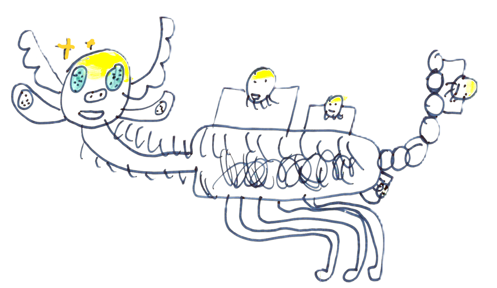

SnowBall Moose: a more upright moose difrent from normal moose
Moose (With Parasites)
It was based off of a real animal, but it was still, not a normal Moose.
It requires massive amounts of parasites to balance on its packed together feet,
not to mention multi pupilled eyes and massive ears.😃😃🦈